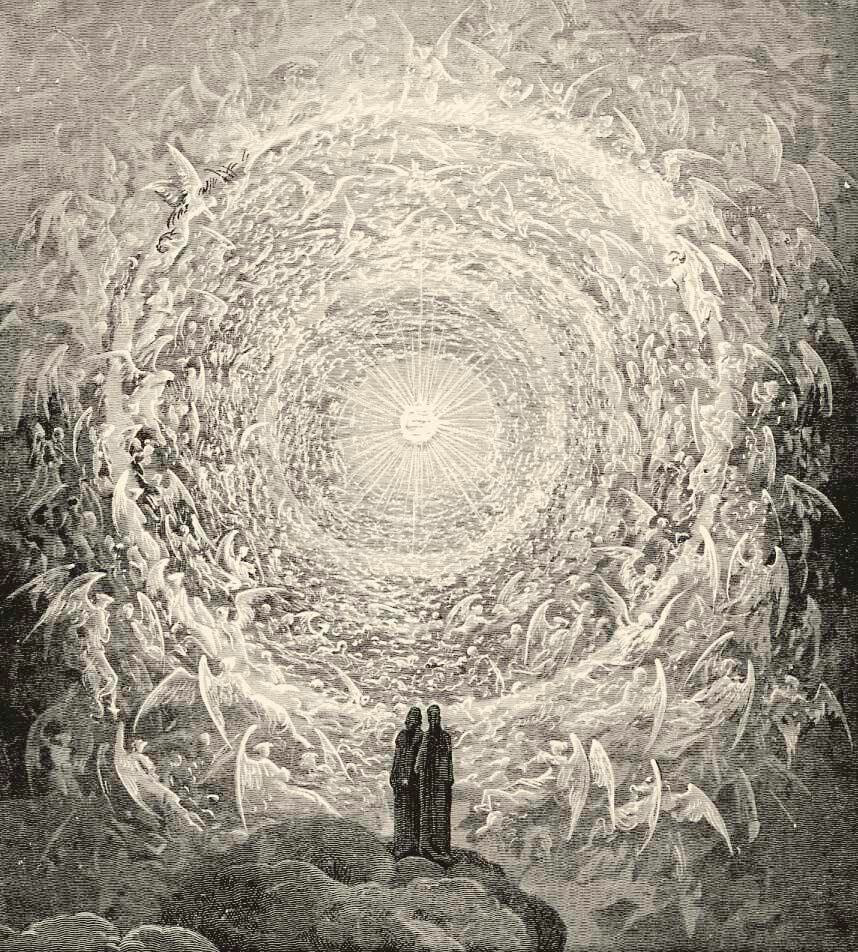

Conferência nº 28
O CRISTO UNIVERSAL E INDIVIDUAL
O CRISTO UNIVERSAL
Convém entender que o Exército da Voz, o Exército da Palavra, é FOGO. E que esse Fogo vivo, esse Fogo vivente e filosofal que faz fecunda a matéria caótica, é o Cristo Cósmico, o "Logos", a Grande Palavra. Porém, para que o Logos apareça, para que venha a manifestação, o UM deve desdobrar-se no DOIS, quer dizer: O Pai na Mãe, e da união dos dois opostos nasce o terceiro: O Fogo. Esse fogo é o Logos, o Cristo, o Verbo que faz possível a existência do Universo na Aurora de qualquer criação.
Convém que entendamos melhor o que é o Cristo. Que não nos contentemos em recordar a questão meramente histórica. Porque o Cristo é uma realidade de instante em instante, de momento em momento, de segundo em segundo; Ele é o Criador. O Fogo tem o poder de criar os átomos e de desintegrá-los; o poder para manejar as forças cósmicas e universais, etc.
O Fogo tem o poder para unir todos os átomos e criar universos, como o poder para desintegrar Universos. O mundo é uma bola de fogo, que se ascende e apaga segundo leis.
Cristo é o Fogo do Fogo, a Chama da Chama, a Assinatura Astral do Fogo.
Sobre a cruz do Mártir do Calvário está definido o Mistério do Cristo com uma só palavra que consta de quatro letras: INRI - Ignis Natura Renovatur Integram - "O Fogo Renova Incessantemente a Natureza".
O advento do Cristo, no coração do homem, nos transforma radicalmente.
Cristo é o Logos Solar, Unidade Múltipla Perfeita. Cristo é a vida que palpita no universo inteiro, é o que é, o que sempre tem sido e o que sempre será.
Muito se falou sobre o Drama Cósmico; inquestionavelmente, este drama está formado pelos quatro Evangelhos. Foi nos dito que o Drama Cósmico foi trazido pelos Elohim à Terra; o Grande Senhor da Atlântida representou esse drama em carne e osso.
O grande Kabir Jesus também teve que representar o mesmo drama, publicamente, na Terra Santa.
Ainda que o Cristo nasça mil vezes em Belém, de nada serve se não nasce em nosso coração também.
Ainda que houvesse morto e ressuscitado ao terceiro dia dentre os mortos, de nada serve isso se não morre e ressuscita em nós também.
Tratar de descobrir a natureza e a essência do fogo é tratar de descobrir a Deus, cuja presença real sempre se revelou sob a aparência ígnea.
A sarça ardente (Êxodo 3,2) e o incêndio do Sinai, a raiz do outorgamento do Decálogo (Êxodo 11,18) são duas manifestações pelas quais Deus apareceu a Moisés.
Sob a figura de um ser de Jaspe e Sardônico da cor da chama, sentado em trono incandescente e fulgurante, São João descreve o dono do universo (Apocalipse 4,3-5). "Nosso Deus é um Fogo Devorador", escreve São Paulo em sua "Epístola aos Hebreus".
O CRISTO INDIVIDUAL
Se em frente ao Guardião do Mundo da Vontade não nos decidimos pelo Caminho Direto, estreito e difícil, não será possível que o Cristo Individual nasça.
Se não nos tornar previamente homens não é possível que nasça o Filho do Homem.
"Se a semente não morre o germe não nasce".
O Cristo Íntimo está latente em nossa semente.
A tentação é fogo, o triunfo sobre a tentação é luz.
O iniciado deve aprender a viver perigosamente; assim está escrito; isto sabem os Alquimistas.
O Cristo Íntimo surge interiormente no trabalho relacionado com a dissolução do Eu Psicológico.
Obviamente o Cristo Interior somente advém a nós, nos momentos máximos dos esforços intencionais e padecimentos voluntários.
O advento do Fogo Crístico é o acontecimento mais importante da nossa própria vida.
O Cristo Íntimo se encarrega, então, de todos os nossos processos mentais, emocionais, motores, instintivos e sexuais.
Inquestionavelmente, o Cristo Íntimo é nosso Salvador interior profundo.
O Cristo Íntimo, o Fogo Celestial, deve nascer em nós, e nasce, em realidade, quando tenhamos avançado bastante no Trabalho Psicológico.
O Cristo Íntimo deve eliminar de nossa Natureza Psicológica as mesmas causas do erro, os EUS CAUSA. Não seria possível a dissolução das causas do Ego enquanto o Cristo Íntimo não haja nascido em nós.
O Fogo Vivente e Filosofal, o Cristo Íntimo, é o Fogo do Fogo, o puro do puro.
O Fogo nos envolve e nos banha por todas as partes, vem a nós pelo Ar, pela Água e pela mesma Terra, que são os seus conservadores e seus diversos veículos.
O Fogo Celestial deve cristalizar em nós, é o Cristo Íntimo, nosso Salvador interior profundo.
O Senhor Íntimo, deve encarregar-se de toda nossa psique, dos cinco cilindros da máquina humana orgânica, de todos os nossos processos Mentais, Emocionais, Motores, Instintivos e Sexuais.
O Cristo Cósmico está formado por todos os Cristos Individuais de uma Galáxia.